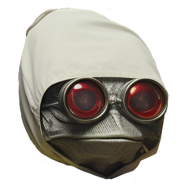

Wplace.live Image Converter by metcas
1. Upload Image:
2. Set Output Width:
3. Enable Dithering:
Creates smooth gradients using patterns.
↳ Solid Priority:
Prevents dithering in solid color areas. (Requires dithering to be enabled)
Process Image
Visits:
0
Original
Wplace.live Palette